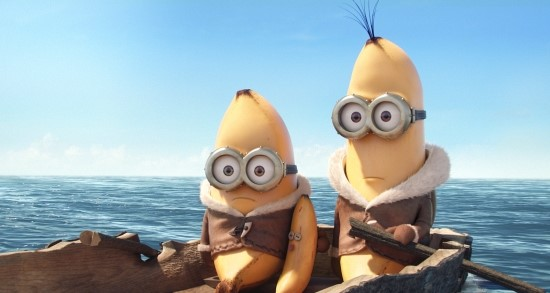

-
일루미네이션 미니언즈 7월 30일 3D 대개봉 !
전작 슈퍼배드에서 인기를 얻은 미니언들을 주인공으로 한 스핀오프(spin-off) 작품
미니언즈 영화관
82K views
-
미니언즈는 일루미네이션 스튜디오의 5번째 장편 애니메이션.
밥, 스튜어트, 케빈 슈퍼원정대가 최고의 보스를 찾아 떠나는 이야기!
미니언즈 영화관
14K views
-

최고의 슈퍼보스를 찾기 위해 슈퍼배드 원정대 먼 길을 떠나다!
이에 밥, 스튜어트, 케빈은 최고의 보스를 찾기 위한 슈퍼원정대가 되어 세상 밖으로 떠난다.
미니언즈 영화관
42K views